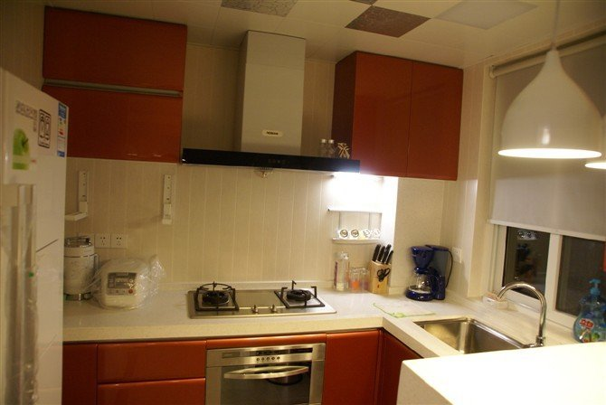

Crosswalk is an HTML application runtime, built on open source foundations, which extends the web platform with new capabilities.
The web platform already has many advantages, from easy cloud services integration to flexible user interface elements. Recently, the platform has become even more attractive, with its increased focus on mobile performance and device APIs.
